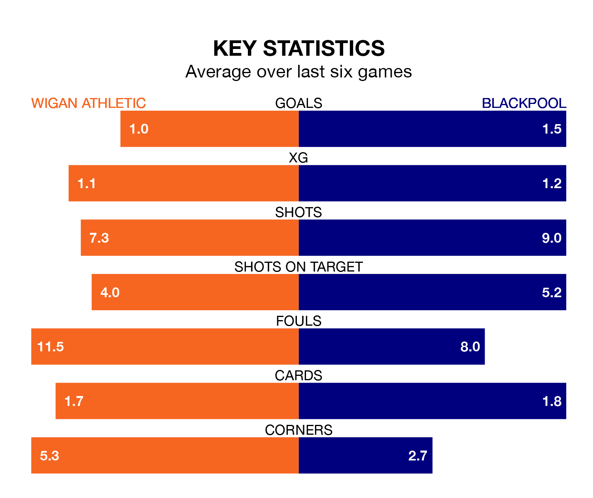

Blackpool travel to Wigan Athletic on Saturday in EFL League One.
The visitors come into the game on the back of a win in their last match, having beaten Northampton Town 1-0 away, with a goal from Matthew Pennington.
The Latics, meanwhile, lost their last match, 1-0 against Wycombe Wanderers.
With 57 goals in 38 games so far this season, Blackpool are scoring more than average in the league with 1.5 goals per game. And they are conceding fewer than average, letting in 41 goals at a rate of 1.1 per game.
Wigan are also above average scorers, with 1.4 goals per game, compared to a league average of 1.3. They have conceded 1.3 goals per game.
In the last 10 years, Wigan and Blackpool have played each other on 14 occasions. Wigan won six of them, Blackpool seven, and they drew once.
On average, the Latics scored 1.2 goals and the Seasiders 1.4 in those matches.
Their last meeting was on September 2, when Blackpool won 2-1 at home.
With Daniel Grimshaw between the sticks, the Seasiders can rely on one of the league's safest pair of hands. He has kept 14 clean sheets in his 37 appearances this season, and only two other 'keepers – Portsmouth's Will Norris and Lincoln City's Lukas Jensen – have been able to prevent the opposition scoring on more occasions in EFL League One.
In Athletic's net, Sam Tickle has 12 clean sheets in 38 games. He has conceded a goal every 80 minutes, 10% more often than the 88 minutes between goals for Grimshaw.
The away side are seventh in the table after 38 games, of which they have won 17 and drawn nine, earning 60 points.
The Latics are three places behind Blackpool in 10th, with 16 wins and seven draws putting them on 55 points.
The hosts are in mixed form in EFL League One, with three wins and a draw from their last six games.
With four wins and a draw over that period, Blackpool's form is better – they have taken 13 points from 18, compared to Wigan's 10.
Saturday's match will be refereed by James Linington, who has taken charge of one EFL League One game so far this season, issuing no red cards and booking two players. He has not awarded any penalties.
He is yet to oversee a match featuring either Wigan or Blackpool this season.
Updated: 15:10 (UTC), 15/03/24